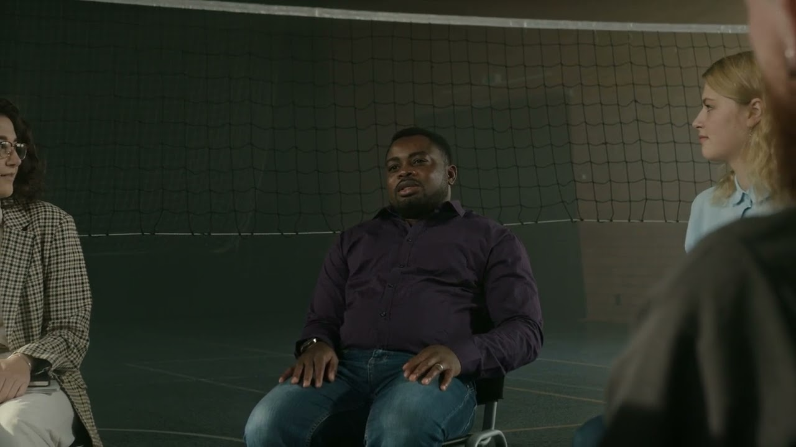
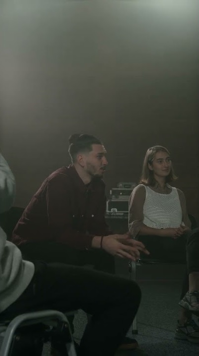
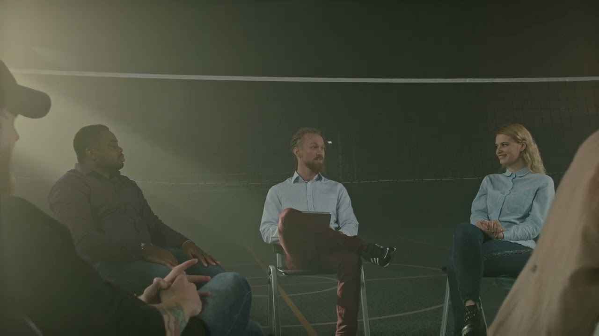
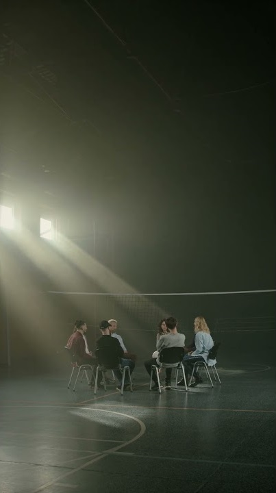
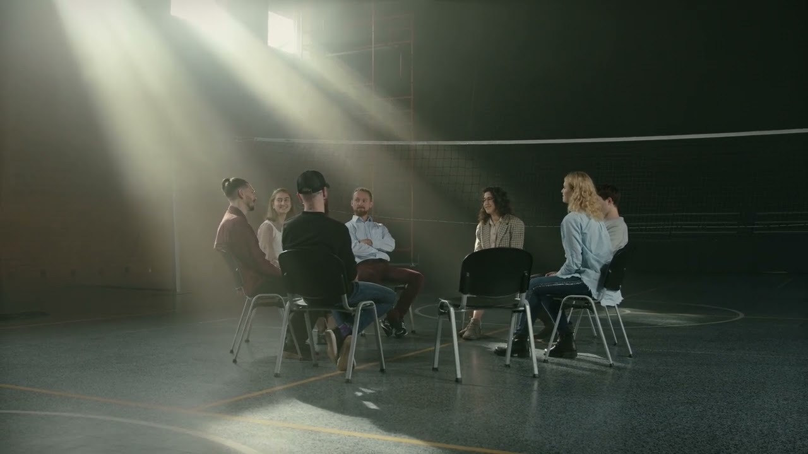
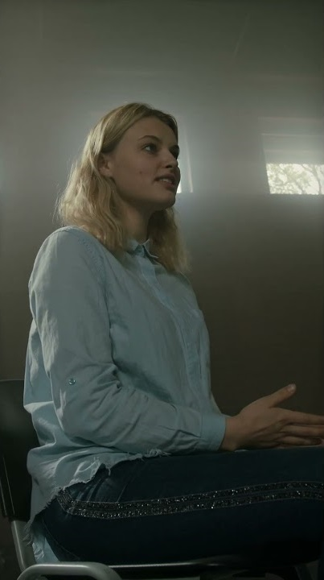
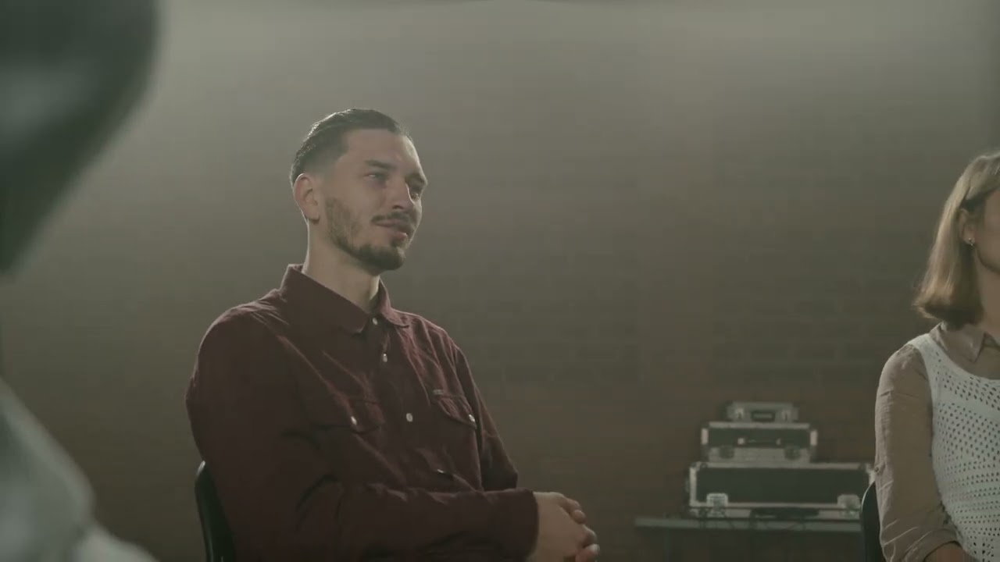
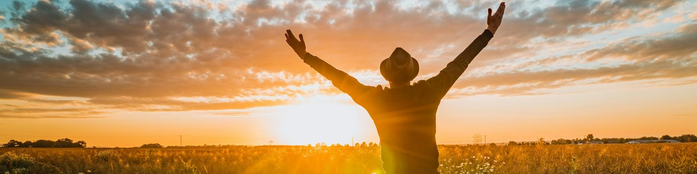

¿CÓMO HEMOS IMPACTADO VIDAS?
Conozca la forma en la que hemos impactado vidas, familias e incluso comunidades bajo la guía del Espíritu Santo. Cada vida es importante; compartimos los siguientes vídeos e historias de impacto positivo gracias a la restauración en Cristo Jesús.







